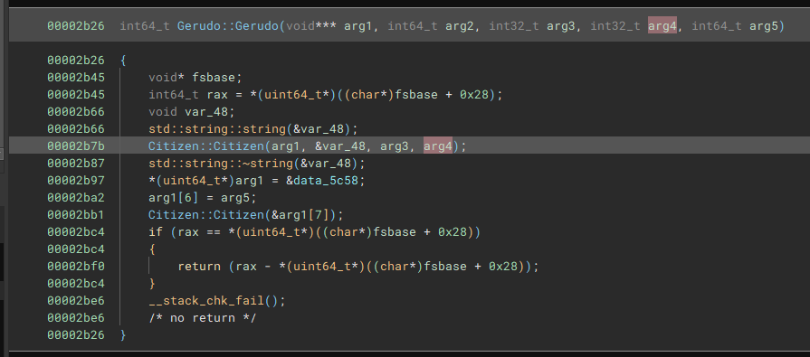
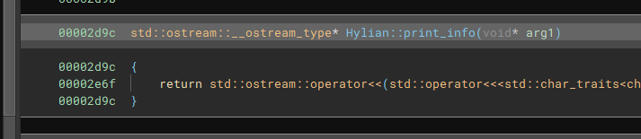

Anomaly 74-76 - Tears of the Analyst-C++ Class Reversing - All Parts
Anomaly 74
 We can see that we are inheriting stuff from Citizen
Anomaly 75
 Looking at all the functions we see that this function is inherited
Anomaly 76
We can see we are passing a string and two ints into the Citizen class
Last modified: 28 May 2024